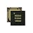
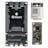
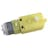

Things used in this project
Hardware components |
|
|  | Nordic Semiconductor nRF52840 Multi-Protocol SoC |
|  | Blues Starter Kit for Cell+WiFi |

|
Seeed Studio XIAO ESP32S3 Sense |
| Seeed Studio Grove Vision AI v2 Kit | |
|  | DC Motor, 12 V |
| TB6612FNG | |

|
SG90 Micro-servo motor |
Software apps and online services |
|
| Edge Impulse Studio | |
| Seeed Studio SenseCraft AI | |
| Zephyr Project Zephyr RTOS | |

|
Arduino IDE |
Story
My below work is submitted for Track 2: Adaptation for INDOOR Activities for People with Visual Impairments of Build2gether 2.0
This project showcases the development of a prototype automated fan designed to assist visually impaired individuals in staying cool at home during the summer.
The fan operates using a small camera that tracks the user's movement, allowing them to move freely around the room without needing to touch the fan. Additionally, the fan can be controlled through voice recognition, providing a touch-free experience for visually impaired users. The fan is also Wi-Fi enabled, allowing it to be integrated into a smart home ecosystem for efficient power management and remote control.
Problem identification
Most fans on the market require users to manually select the desired fan speed and rotation, posing challenges for individuals with disabilities issues. This can lead to discomfort and inconvenience when trying to regulate airflow.
Moreover, for visually impaired individuals, navigating around a fan can be hazardous. Accidental collisions with the fan or malfunctions during operation could lead to injuries from the fan blades or even potential fire hazards.
Solution development
To address this issue, I developed a smart fan concept that tracks human movement and automatically adjusts the wind direction without requiring any manual intervention.
This prototype incorporates key features of a production model, showcasing the possibility of functionalities integration into existing fan designs for disabilities.
Key feature of the intelligent fan:
- Person Tracking: The integrated camera tracks movement, alowing the fan's rotation to direct airflow towards the user without the need of manual adjustment.
- Voice Control: Equipped with a PDM microphone, the fan recognizes voice commands like "on" and "off," making it easier for visually impaired individuals to operate.
- Wi-Fi Connectivity: The fan connects to the internet, enabling data transmission to the cloud and integration with popular ecosystems such as Datacake and Google Cloud.
Demonstration
This fan should be placed in a room corner to ensure full coverage when users enter. Its Wi-Fi connectivity allows seamless integration into the home's smart ecosystem.
- Feature 1 : Person tracking and airflow direction
- Feature 2 : Voice control. Currently, there are 2 voice commands: on, off
- Feature 3: Cloud connectivity for data transmission and analysis. Sensor data can be pushed to Notehub, then forwarded to popular data platform such as Google Cloud, AWS, etc.
System overview
The below image demonstrates there are 3 main components and how each interact with others.
1. Voice recognition & Safety
How it works
The nRF52840DK uses the PDM microphone for voice input. An ML model, deployed locally on the nRF52840DK using Edge Impulse, processes the voice and outputs the result. The data flow is demonstrated below:
Implementation of the Ultrasonic sensor
Thanks to the public repository for the HC-SR04 Zephyr RTOS driver by Daniel Veilleux , I was able to reuse the code and accelerate the development of my application.
Step 1: Configure the device tree for the HC-SR04 sensor:
us0: hc-sr04 {
compatible = "elecfreaks,hc-sr04";
label = "HC-SR04_0";
trig-gpios = <&gpio0 26 GPIO_ACTIVE_HIGH>;
echo-gpios = <&gpio0 27 GPIO_ACTIVE_HIGH>;
status = "okay";
};Step 2: Move the drivers file to the project directory and add below configuration to the prj.cfg
CONFIG_SENSOR=y
CONFIG_GPIO=n
CONFIG_HC_SR04_NRFX=yStep 3: Measure the distance between the object and the fan. If the distance is less than 40 cm, turn off the fan to ensure safety.
Implementation of the PDM microphone
The code on nRF52840DK is built based on the sample wrapper code.
Step 1: Build the voice recognition model using the Edge Impulse platform.
Model layer:
Model training result:
Step 2: Deploy the model as a C++ library
Step 3: Configure the PDM microphone as the input for the model on the nRF52840DK.
&pinctrl {
pdm0_default_alt: pdm0_default_alt {
group1 {
psels = <NRF_PSEL(PDM_CLK, 0, 30)>,
<NRF_PSEL(PDM_DIN, 0, 31)>;
};
};
};
dmic_dev: &pdm0 {
status = "okay";
pinctrl-0 = <&pdm0_default_alt>;
pinctrl-names = "default";
clock-source = "PCLK32M_HFXO";
queue-size = <16000>;
};Step 4: Perform local predictions on the nRF52840DK.
Sample debug output of the ML model:
* Booting Zephyr OS build v2.6.99-ncs1-14-g15be5e615498 *
Machine learning model sampling frequency: 52
Labels assigned by the model:
- on
- off
- noise
Prediction started...
Classification results
======================
Value: 0.90 Label: on
Value: 0.10 Label: off
Value: 0.00 Label: noiseStep 5: Transmit data via serial output to the STM32 Blackpill
while (true) {
// Get the classification result
err = ei_wrapper_get_next_classification_result(&label, &value, NULL);
if (err) {
if (err == -ENOENT) {
err = 0;
}
break;
}
// Print out the prediction value
printk("Value: %.2f\tLabel: %s\n", value, label);
if (label_count == 0) {
// Send the highest prediction value through serial
int ret = uart_tx(uart, label, sizeof(label), SYS_FOREVER_US);
if (ret) {
printk("UART sent data failed (err: %d)\n", ret);
return;
};
label_count++;
}
}
2. Cloud integration
How it works
The STM32 sends sensor data to the Blues kit via I2C connection. Using the Wi-Fi notecard, the Blues Kit transmits this data to the Notehub at regular intervals—in this case, every 15 seconds. From there, Notehub forwards the data to various popular platforms, including Datacake and Google Cloud.
Implementation
Set up a 15-second timer interrupt. On each interrupt, retrieve the sensor data and create a request to send it to Notehub.
void timerInterrupt() {
/*STM32: Get sensor data */
aht.getEvent(&humidity, &temp);
/* Notecard: Send to Notehub */
J *req = notecard.newRequest("note.add");
if (req != NULL)
{
JAddStringToObject(req, "file", "sensors.qo");
JAddBoolToObject(req, "sync", true);
J *body = JAddObjectToObject(req, "body");
if (body)
{
JAddNumberToObject(body, "temp", temp.temperature);
JAddNumberToObject(body, "humidity", humidity.relative_humidity);
}
notecard.sendRequest(req);
}
}
3. Fan controller
How it works
There are two small parts in the fan controller block:
- STM32: Collects humidity and temperature sensor data for automatically adjusts the DC motor speed. This eliminates the need for users to manually change the fan speed. Additionally, users can turn the fan on or off using voice commands. In the future, I plan to add a feature allowing voice control of fan speed.
- ESP32 XIAO: Receives the bounding box from the Vision AI Module V2 Kit (deployed using SenseCraftAI) through the SSCMA connection, then rotates the motor to keep the bounding box centered.
Implementation
- STM32:
Step 1: Configure the STM32 for communication with the Blues Kit via I2C. See wring diagrams
Step 2: Initialize the connection settings for the Blues Kit to transmit data to Notehub.
/* Notecard */
notecard.begin();
notecard.setDebugOutputStream(usbSerial);
/* Notecard: Connect to Notehub */
J *req = notecard.newRequest("hub.set");
JAddStringToObject(req, "product", productUID);
JAddStringToObject(req, "mode", "continuous");
notecard.sendRequest(req);Step 3: Forward data from Notehub to other platforms.
Step 4: Initialize the sensor and collect environmental data, then calculate the fan speed accordingly.
int adjustFanSpeed(float temp, float humid) {
/* Adjust fan speed based on the temp & humid from AHT10 */
int speed = 0;
if (temp > 40) {
speed = 150;
} else if ((temp <= 40) && (temp >= 30)) {
speed = 100;
} else {
speed = 50;
}
if (humid > 80) {
speed = speed - 10;
} else if ((humid <= 80) && (humid >= 50)) {
speed = speed;
} else {
speed = speed + 10;
}
return speed;
}Step 5: Receive voice commands via serial from the nRF52840 DK to control the fan operation mode (on or off).
void adjustFanModes() {
/*Adjust fan modes based on the UART receive from nRF52840 */
while (Serial.available() >= 0) {
int receivedData = Serial.read();
if (receivedData == 1) {
digitalWrite(PIN_STBY, HIGH);
} else if (receivedData == 0) {
// Turn off the motor
digitalWrite(PIN_STBY, LOW);
}
}
}- ESP32:
Step 1: Deployed the Face Detection AI model on SenseCraftAI on the Vision AI Module V2 Kit as below.
Step 2: Retrieve the bounding box data from the Vision AI Module V2 Kit and adjust the servo motors to center the bounding box on the screen.
// Rotate the camera to make sure the bounding box is centered
if (!model.invoke()) {
Serial.println("Invoke success");
// If the bounding boxes are valid
if (model.boxes().size() > 0) {
// Get current axis
int x = model.boxes()[0].x;
int y = model.boxes()[0].y;
// Move to camera
int new_x = encode_x(x);
horizontal_move(new_x);
int new_y = encode_y(x);
vertical_move(new_y);
}
}
Further improvements
- Implement voice control for adjusting fan speed.
- Develop a smartphone application for remote control.
- Design a custom PCB to integrate all components.
Credit
- Thank you to the contest organizers for providing valuable insights and feedback. I also extend my gratitude to the competition sponsors, including Arm, Blues, DFRobot, M5Stack, Nordic Semiconductor, PCBWay, Seeed Studio and Hackster. A special thanks to the many friends who answered my questions on Discord.
- I would like to express my appreciation the public repository for the HC-SR04 Zephyr RTOS driver by Daniel Veilleux, which allowed me to use the code and speed up the development of my application.